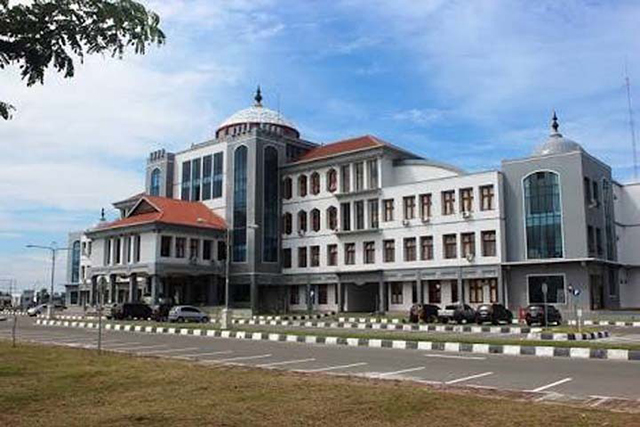
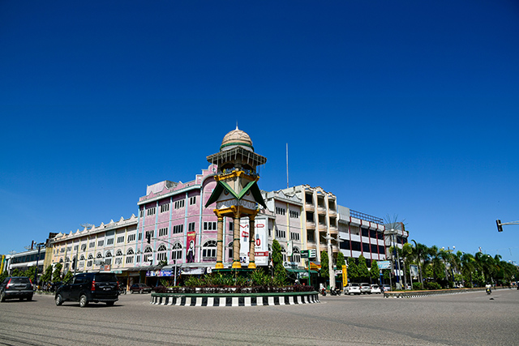
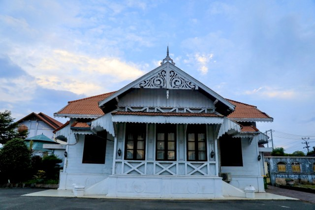

Sejarah

Kabupaten Bireuen dalam catatan sejarah dikenal sebagai daerah Jeumpa. Dahulu Jeumpa merupakan sebuah kerajaan kecil di Aceh. Menurut Ibrahim Abduh dalam Ikhtisar Radja Jeumpa, Kerajaan Jeumpa terletak di Desa Blang Seupeung, Kecamatan Jeumpa, Kabupaten Bireuen.
Kerajaan-kerjaan kecil di Aceh tempo dulu termasuk Jeumpa mengalami pasang surut. Apalagi setelah kehadiran Portugis ke Malaka pada tahun 1511 M yang disusul dengan kedatangan Belanda. Secara de facto Belanda menguasai Aceh pada tahun 1904, yaitu ketika Belanda dapat menduduki benteng Kuta Glee di Batee Iliek, di bagian barat Kabupaten Bireuen.
Kemudian dengan Surat Keputusan Vander Guevernement General Van Nederland Indie tanggal 7 September 1934, Aceh dibagi menjadi enam Afdeeling (kabupaten) yang dipimpin oleh seorang Asisten Residen. Salah satunya adalah Afdeeling Noord Kust van Aceh (Kabupaten Aceh Utara) yang dibagi dalam tiga Onder Afdeeling (kewedanan).
Kewedanan dikepalai oleh seorang Countroleur (wedana) yaitu: Onder Afdeeling Bireuen (kini Kabupaten Bireuen), Onder Afdeeling Lhokseumawe (Kini Kota Lhokseumawe) dan Onder Afdeeling Lhoksukon (Kini jadi Ibu Kota Aceh Utara).
Geografis

Kabupaten Bireuen terbentuk pada tahun 1999 berdasarkan Undang-Undang Nomor 48 Tahun 1999, yang kemudian dirubah dengan Undang-Undang Nomor 8 Tahun 2000. Daerah kabupaten yang terletak diwilayah pesisir Provinsi Aceh ini sebelumnya merupakan wilayah dari Kabupaten Aceh Utara, yang kemudian dimekarkan pada tahun 1999 melalui peraturan undang-undang tersebut.
Secara geografis, posisi Kabupaten Bireuen berada pada titik koordinat antara 40 54’-50 21’ Lintang Utara (LU) dan 960 20’- 970 21’ Bujur Timur (BT). Luas wilayah Kabupaten Bireuenadalah 1.796,31 kilometer persegi (km2) atau seluas 179.631 hektar (Ha). Luas wilayah Kabupaten Bireuen tersebut adalah sekitar 3,13 persen dari total luas wilayah Provinsi Aceh secara keseluruhan (57.365,57 km2). Secara administrasi, wilayah daerah Kabupaten Bireuen secara langsung berbatasan pada masing-masing sisi sebagai berikut :
Sebelah Utara dengan Selat Malaka;
Sebelah Timur dengan Kabupaten Aceh Utara;
Sebelah Selatan dengan Kabupaten Aceh Tengah dan Kabupaten Bener Meriah dan;
Sebelah Barat dengan Kabupaten Pidie dan Pidie Jaya;
Selanjutnya, pembagian wilayah administrasi pemerintahan dalam lingkup pemerintah Kabupaten Bireuen saat ini terdiri dari sebanyak 17 (tujuh belas) wilayah kecamatan, meliputi: Kecamatan Samalanga, Simpang Mamplam, Pandrah, Jeunieb, Peulimbang, Peudada, Juli, Jeumpa, Kota Juang, Kuala, Jangka, Peusangan, Peusangan Selatan, Peusangan Siblah Krueng, Makmur, Gandapura, dan Kuta Blang. Diantaraseluruh kecamatan tersebut, Kecamatan Peudada dan Kecamatan Juli merupakan kecamatan dengan luaswilayah paling dominandiantara kecamatan lainnya. Kecamatan terluas dalam hal ini adalah Kecamatan Peudada, dengan wilayah seluas 31.283,90 Ha atau 17,42 persen dari total luas wilayah Kabupaten Bireuen, berikutnya adalah Kecamatan Juli dengan wilayah seluas 23.118,35 Ha.
atau 12,87 persen dari total luas wilayah Kabupaten Bireuen secara keseluruhan. Sementara itu, kecamatan dengan luas wilayah paling kecil adalah Kecamatan Kota Juang (1.690,87 Ha) dan Kecamatan Kuala (1.724,56 Ha), dengan proporsi luas wilayah masing-masing sebesar 0,94 dan 0,96 persen dari total luas wilayah Kabupaten Bireuen secara keseluruhan.
Letak geografis Kabupaten Bireuen di kawasan perlintasan jalan nasional lintas pulau Sumatera juga merupakan nilai strategis yang perlu dimanfaatkan sebagai peluang bagi daerah ini untuk dapat lebih mengoptimalkan potensi sumber daya yang dimilikinya. Dalam posisi tersebut, Kabupaten Bireuen diharapkan menjadi suatu kawasan pertumbuhan ekonomi di kawasan pantai timur Aceh.Hal tersebut dapat diwujudkan denganmemanfaatkanletak strategis daerah ini diantara sejumlah daerah lain di sekitarnya terutama Kabupaten Pidie Jaya, Bener Meriah, dan Aceh Tengah.Posisi Kabupaten Bireuen dalam hal ini juga memungkinkan kemitraan lintas daerah dalam bentuk transaksi perdagangan, pariwisata,maupun jasa-jasa lainnya.
Wisata

Sejumlah objek wisata mulai dari wisata pantai, sungai maupun tempat bersejarah Kamis (5/5/2022) banyak dikunjungi para wisatawan, umumnya wisatawan lokal.
Amatan ramli di kawasan Pantai Ujong Blang, Bireuen yang berjarak sekitar 5 KM arah utara Bireuen sejak pukul 10.00 WIB objek wisata tersebut mulai ramai dengan pengunjung bersama keluarganya.
Objek wisata tersebut selain lokasi parkir luas, bibir pantai juga luas dan terdapat sejumlah tempat istirahat maupun makan dan minum, pedagang menyediakan berbagai jenis minuman umumnya kelapa muda.
Para anak-anak maupun remaja mandi di laut, sebagian orang tua tetap mengawasi anaknya saat mandi di laut. Mayoritas pengunjung datang menggunakan kendaraan roda empat maupun sepeda motor, mereka terlihat bersama anggota keluarga ada yang membawa makanan makan bersama di lokasi objek wisata.
Mencegah berbagai kemungkinan karena ramainya para pengunjung, jajaran Polres Bireuen sejak melaksanakan kegiatan patroli ke objek wisata di Ujong Blang maupun kawasan objek wisata pantai Ujong Seukee, Peudada.
Kapolres Bireuen, AKBP Mike Hardy Wirapraja SIK MH melalui Kasubsi PIDM Bripka Safwan Rizal kepada Serambinews.com mengatakan, personil dari Polsek Kota Juang, Polres Bireuen ikut memantau kawasan objek wisata, mengantisipasi meledaknya pengunjung dari luar daerah.
Petugas mengingatkan dan menghimbau kepada pedagang dan pengunjung agar pada saat memarkirkan kendaraan menggunakan kunci tambahan dan apabila mau pergi berenang di laut supaya tidak terlalu jau dari tepi pantai.
Ditambahkan, tim patroli motor Sat Samapta Polres Bireuen juga meningkatkan patroli pada malam hari khususnya selama perayaan hari raya idul fitri. Patroli digelar di sejumlah tempat keramaian, pertokoan hingga ke objek vital dengan tujuan terciptanya kenyamanan masyarakat dalam merayakan hari raya Idul Fitri bisa terwujud dengan situasi keamanan yang kondusif. Selain itu mencegah aksi kriminalitas yang bisa terjadi kapan saja, seperti pencurian sepmor.
Di Bireuen selain Pantai Ujong Blang juga terdapat objek wisata Kuala Raja, Pantai Ujong Seuke Peudada, Pante Pangah, Pantai Cermin Gandapura, kawasan Pantai Jangka, Jangka Bireuen kemudian objek wisata sungai kawasan Krueng Simpo, Juli Bireuen.
Sedangkan objek wisata sejarah diantaranya komplek pendopo Bupati Bireuen, makam Tgk Awe Geutah di Peusangan dan sejumlah objek wisata lainnya.(*)